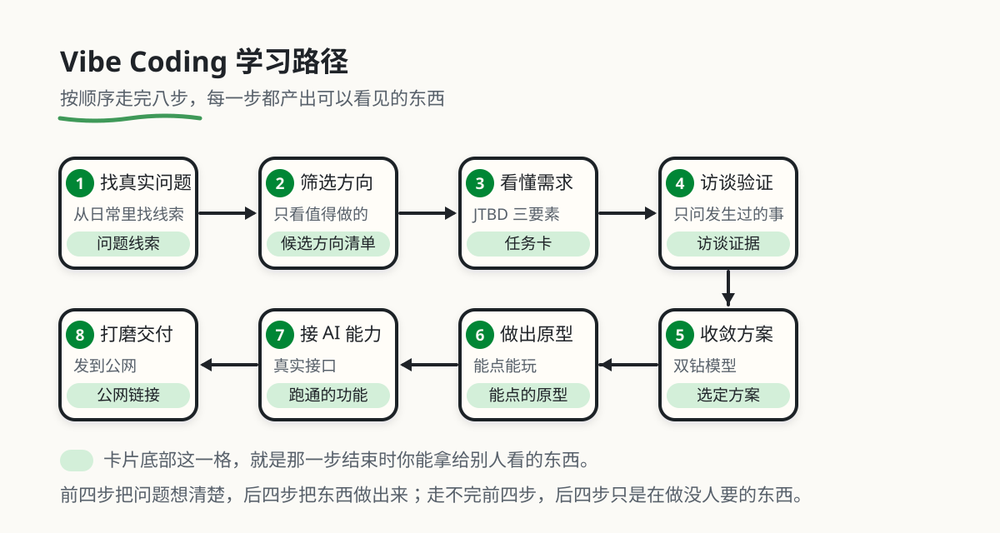

原书 · Stage 1–3 · 实战与附录
Vibe Coding 101
从一句需求到第一个可用作品
先让作品运行起来，再学设计、调试、数据库和部署，最后用 MCP 与 Agent 扩展自己的应用。

用一个作品走完三阶段
- Stage 1：提出需求、做原型、复现和修复问题，交付可运行的作品。
- Stage 2：接入数据库、完善界面、部署上线，检查权限和恢复办法。
- Stage 3：给 Agent 配置工具与边界，用真实回执检查成功和失败。
每一阶段的具体检查方法放在原书导读中。全文按原有章节分开显示，目录、上一章和下一章都可以直接跳转。